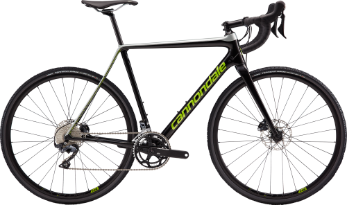

- SPECIALIEZED
- BMC
- cannondale
cannondale
The company was founded in 1971 by Joe Montgomery and Murdock MacGregor to manufacture precast concrete housing. Later Ron Davis came to Cannondale from CBS Laboratories where he was VP in charge of the development of microfilm reproduction. Ron, a polymath and a gifted mechanical designer/inventor, had ideas for an internal combustion engine that would use ammonia as fuel. Such a concept, if proved, could have far-reaching effects in warfare logistics and middle-eastern politics. Davis, with MacGregor as assistant, had some surprising success. They managed to duplicate and exceed results obtained by Allison Engine, then a division of General Motors. Faced with a commitment to invest a large amount of capital to take the project to a workable model installed in an automobile, Joe decided that the company should raise capital by developing and marketing other products that they had conceived. By now MacGregor and Davis had recruited two more CBS Laboratory alumni: John Wistrand, an award-winning Industrial Designer, and Jim Catrambone, a rising management star. A highly advanced air conditioner with no moving parts was a first effort.
